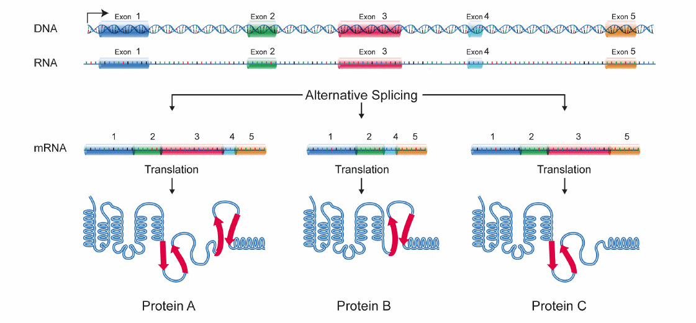
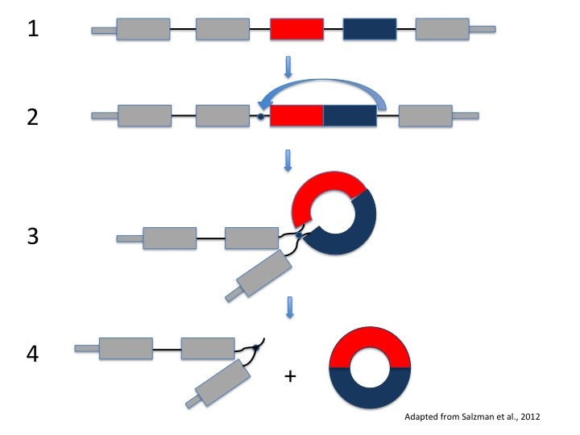
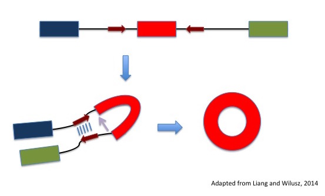

In the biological world, we see that many things come in different shapes and sizes: animals, plants, microbes, and proteins. It turns out that even RNA falls into that category.
What is RNA? RNA, also known as ribonucleic acid, serves as the intermediate from DNA to protein. Similar to the genetic code for DNA, RNA is made up of four bases: adenine (A), cytosine (C), guanine (G), and uracil (U), with uracil (U) replacing thymine (T) in DNA.
After RNA was discovered in the late 19th century, many different types of RNA have been identified. The most commonly known type is messenger RNA (mRNA), which turns into protein during a process called translation. Besides mRNA, there are other types of RNA called non-coding RNAs that do not turn into protein but have other important functions in the cell. Some examples of these are transfer RNAs (tRNAs), which carry the building blocks of proteins called amino acids to protein assembly sites, and microRNAs (miRNAs), short RNA sequences that bind to mRNAs and inhibit them from becoming proteins.
Recently, a new class of non-coding RNAs called circular RNAs (circRNAs) has generated a lot of excitement in the scientific community. What exactly are circRNAs? As you probably guessed, they are circular RNA molecules, but their hidden fun fact is that they are formed from a process called alternative splicing.
Let’s talk a little bit about alternative splicing first. When a gene from DNA is transcribed to RNA, a precursor mRNA (pre-mRNA) forms, containing both the information-holding bits called exons and the non-coding bits called introns. In the splicing process, the introns are removed while the exons of a gene are joined together. After splicing, this string of exons forms mRNA that codes for protein. Since a gene might contain multiple exons, alternative splicing is a shortcut we can use to make different proteins from the same gene. By including different combinations of exons in the mRNA, we can build several unique mRNAs from a single gene in the DNA, which in turn means that we can build different proteins from one single gene (Figure 1). This is similar to making words using letters in the alphabet: we take letters from the alphabet (a gene) and combine certain letters together (exons) to create words that have different meanings (various proteins).

Figure 1: Process of alternative splicing. As shown in the figure, the information-holding bits 1, 2, 3, 4, and 5 can be mixed and matched to form three different mRNA isoforms. These RNAs then lead to two different proteins A, B, and C.
So how are alternative splicing and circRNAs actually related to each other? Although the information-holding bits are usually put together to make protein-coding mRNAs, we can also use these bits to form circRNAs. circRNAs look different from mRNAs though because they form by “backsplicing” – this means that the splice site at the front of an exon is joined to the splice site at the end of an exon, forming a circle (Figure 2). Some examples of circRNAs come from the fruit fly muscleblind gene, which is similar to the human muscleblind-like gene involved in a neuromuscular disease called myotonic dystrophy, and the mammalian sex-determining gene Sry.

Figure 2: CircRNA formation by backsplicing. Starting with the gene in (1), we see that backsplicing joins the front of the red bit with the back of the blue bit (2), forming a circle in (3) and (4).
Because of their strange characteristics, circRNAs were not noticed or generally accepted as a type of RNA for a long time. Although some circRNAs such as Sry had already been discovered, most researchers thought that these circRNAs were splicing mistakes. These researchers made two major assumptions: first, alternative splicing produced only linear mRNAs that coded for protein, and secondly, exons had to be spliced in order (for example, exon 1 has to come before exon 2 or 3).
A few years ago, Norman Sharpless at the University of North Carolina School of Medicine and Julia Salzman at the Stanford University School of Medicine challenged these assumptions. While pursuing projects to understand rearrangements in cancer genes, they made a surprising discovery that exons could be spliced out of order to form circular structures. Using biochemical and bioinformatics tools, they independently analyzed pools of RNA and discovered hundreds and thousands of circRNAs in various human cells and even among different species, from yeast to mice! In fact, most of these circRNAs were more abundant than their linear counterparts from the same gene. These circRNAs were also expressed at different levels in different cell types, strongly suggesting that they couldn’t just be splicing accidents.
These incredible findings have opened up many questions about these seemingly important yet mysterious RNAs. The biggest area of research right now is to understand what these circRNAs do. Two circRNAs Cdr1as and Sry are known to be microRNA sponges, which bind miRNAs and prevent them from repressing protein synthesis. This particular role of “soaking up” microRNAs does not seem to apply to other circRNAs, however, motivating us to find other possible functions. Some think that circRNAs bind to RNA-binding proteins, in order to regulate interactions between these proteins and linear mRNAs from the same gene. Another study has proposed that circRNA creation competes with linear splicing, meaning that the circular form of a gene is made at the expense of the linear form and vice versa. This model suggests that circRNA formation directly fine-tunes the number of linear mRNAs and thus the amount of protein formed. There is also the possibility that circRNAs themselves form proteins; however, this phenomenon has not yet been shown to occur naturally.
Another major area of research seeks to understand how circRNAs are formed. Many studies have focused on sequences or features in the genome that may distinguish the choice between linear and circular RNA splicing. Some have noticed that introns surrounding the circularized exon tend to be longer and contain sequences that allow the introns to come together like a zipper (Figure 3). Two RNA-binding proteins Adar and Quaking have been shown to control levels of circRNA, spurring the ongoing search for more proteins involved in the formation of circRNAs.

Figure 3: The role of introns in circRNA formation. The black line regions indicated by red arrows can come together like a zipper, which allows backsplicing to occur (purple arrow).
We still know very little about these puzzling circular structures, so understanding more about them is important. But for those who are not in the field, there are still reasons to care about circRNAs. In addition to probing the “what” and “how,” researchers are interested in figuring out the role of circRNAs in health and disease. Some studies have already provided evidence that circRNAs serve as indicators for aging in the brain and in human blood samples. Moreover, since the dysregulation of alternative splicing leads to various diseases (i.e. cancer, neurodegenerative diseases such as amyotrophic lateral sclerosis or ALS), incorrect circRNA levels may likely be correlated with or even cause these diseases.
While these research directions are exciting, I would argue that there is an even more compelling reason for studying circRNAs. Their discovery reminds us of why many people choose to study science in the first place: to question, to explore, and to expand our knowledge of how the natural world works. Thanks to the pioneering circRNA researchers who were willing to overturn old assumptions, this new class of RNA is revolutionizing our entire understanding of basic biological processes, such as RNA transcription and protein translation. Julia Salzman sums the impact of the discovery of circRNAs:
“[C]ircular RNAs are not merely molecular curiosities. Their circular structure […] has implications for essentially everything that we know or believe about RNA transcripts, from how they are spliced and exported from the nucleus, to how and if transcripts are translated. It makes a big difference.”
It is amazing to think that a phenomenon that was once ignored would shake the entire RNA world, motivating researchers to reconsider the basics that had been taken for granted. As circRNA research moves forward, it will also paradoxically revisit the past—to deconstruct and reconstruct what we know about RNA biology.
{kind=link}